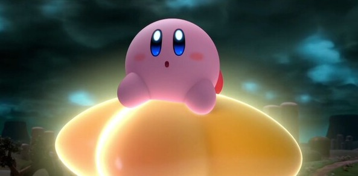

Hello world.
- 개요
- 특징
- 능력
능력

커비는 팝스타에 사는
핑크색의 동그란 생명체이다.
적을 빨아들이고 삼킴으로써
그 능력을 카피할 수 있으며
무한한 파워를 지니고 있다.
설정상 위장이 우주로 되어 있으며, 도팡 일당의 습격에서 아래 화면인 터치 스크린에서 확실하게 보인다. 또한 몸에 공기를 넣어 부풀려 하늘을 자유롭게 날 수 있다. 덩치에 비해 입을 아주 크게 벌릴 수 있고 흡입력도 굉장해서, 자신의 몸집만하거나 그보다도 더 큰 물체를 무엇이든 빨아들이고 삼킬 수 있다.
- 카피 능력
커비 하면 가장 먼저 떠오를 능력이자 아이덴티티로, 특별한 능력을 가진 적을 빨아들여 삼켜 그 능력을 복사할 수 있다. 기본적으론 한 가지 능력만 카피할 수 있지만, 서로 다른 능력을 합성하거나 저장하여 들고 다닐 수 있는 시리즈도 있다.
- 흡입 / 뱉기
블록이나 적, 보스가 특정 공격으로 만드는 별이나 기술 등을 빨아들여서 삼키거나 뱉어서 공격할 수 있다. 거울의 대미궁부터는 버튼을 꾹 누르고 있거나 커맨드를 입력하여 더 무거운 물체나 여러 물체들을 한번에 빨아들일 수 있다. 빨아들인 물체들은 뱉어내면 별 총알이 되어 맞은 것에게 대미지를 준다. 64와 디스커버리에선 별 총알을 뱉지 않고 빨아들인 것을 그대로 뱉는다. 많은 작품에서 2마리 이상의 적을 흡입하고 뱉으면 위력이 더 강하고 적을 관통하는 관통탄이 된다. 초대작 별의 커비에서는 커비 하면 생각하는 카피 능력이 없었다. 즉 원조 게임은 빨아들이고 별을 만들어 쏘는 게 전부였다. 이후의 본가 작품들도 흡입 능력만으로 충분히 게임을 풀어나갈 수 있도록 디자인되어 있다. 카피 능력을 쓰다보니 가려지는 사실인데 커비가 쏘는 별 총알은 대미지가 다른 카피 능력과 비교해서도 상위권에 들만큼 크다.
- 소환 능력
헬퍼 소환 : 별의 커비 슈퍼 디럭스와 그 리메이크에서 카피한 능력으로 헬퍼를 소환할 수 있다 헬퍼에게 자신의 카피 능력을 줘서 다른 헬퍼로 변신시키거나, 다시 자신의 카피 능력으로 만들 수 있다.
구이 소환 : 별의 커비 3에서 자신의 체력을 한 칸 소모하여 구이를 소환할 수 있다. 구이를 다시 삼켜서 없애면 깎인 체력이 돌아온다.
- 워프스타
올라타서 자유자재로 날아다니거나 우주공간으로 날아갈 수도 있고 워프도 가능하다.
- 메타모링
모여라! 커비 일부분에 잠깐 등장. 털실 커비 이야기에서는 주 능력으로, 커비가 털실로 변해버리는 바람에 흡입과 호버링이 불가능해진 대신 추가되었다. 기본적으로는 대시할 때 차로 변하거나, 공중에서 점프 버튼을 눌러 낙하산으로 변해 천천히 낙하하거나, 공중에서 아래를 향하면 추로 변신하는 메타모링이 가능하다. 메타모링 패치를 이용해서 버기카, 증기 기관차, 로켓 등으로 변신한 후 진행하는 구간도 있다.
- 프렌즈 하트
별의 커비 스타 얼라이즈에 등장. 적에게 하트를 던져 친구로 만든다. 이는 친구도 마찬가지라서 친구가 적에게 하트를 던지면 그 적의 모습으로 변신한다. 다만 카피 능력이 없는 적에게는 효과가 없고, 1회성 카피 능력을 주는 적에게 던진 경우 적이 모자가 된다.
- 호버링
몸에 공기를 불어넣은 채 양 팔을 파닥파닥거려 하늘을 난다. 거의 모든 게임에선 마음껏 날 수 있지만, 64와 디스커버리, 그리고 커비 헌터즈 시리즈에선 활공에 제한이 존재한다. 비행을 캔슬한 후 나오는 입깁은 보스들을 제외한 적에게 히트 판정을 준다. 스매시브라더스 시리즈에선 상대를 장외시키는 것이 목적이기에 공중에서 무한으로 체공이 가능하면 밸런스 붕괴인지라 6단 점프로 변경되었다.
- 기타 능력
우주 공간에서 생존 : 워프스타를 타고 맨몸으로 우주공간에 나가지만 아무 영향도 받지 않는다.
맷집 : 나이트메어가 사망하면서 일으킨 폭발에 달의 일부가 날아가지만 폭심지에 있던 커비는 멀쩡하게 워프스타를 타고 날아온다.
괴력 : 커비의 장난감 상자 메가톤 펀치에서 팝스타를 주먹으로 가르거나, 별의 커비 스타 얼라이즈 갤럭틱 홈런왕에서 운석을 야구 배트로 쳐내 수천 광년, 최대 9999광년까지 초광속의 속도로 순식간에 날려보내기도 한다.